Escola de Formação de Ritmistas · Bloco de Carnaval · Banda Show
Formação de ritmistas para o Carnaval do Rio de Janeiro.
De Onde Viemos
O projeto foi mudando de forma ao longo dos anos, e cada fase deixou uma marca no que somos hoje.
Fundada em 2018 pelo Mestre Yago, nasce querendo tocar o "lado B" do samba-enredo
O projeto se abre para todos os ritmos e passa a desfilar no Carnaval
Toda a trajetória se consolida numa escola de formação de ritmistas para o Carnaval
Abertura
O projeto passa a se chamar oficialmente Escola Balanço de Formação de Ritmistas para o Carnaval: uma estrutura mais ampla que reúne tudo o que já fazemos. O Bloco Balanço continua existindo exatamente como sempre foi: agora ele é uma das frentes dentro dessa escola.
O Bloco Balanço segue igual — ensaios, desfile, repertório. Ele passa a ser uma das frentes de uma estrutura maior.
Novo nome oficial do projeto, que abriga todas as frentes de ensino e apresentação.
Você continua fazendo parte da Balanço — agora com mais caminhos de formação disponíveis.
O Ecossistema Balanço
Núcleo de ensino. Capacitação técnica e contínua o ano todo, por naipe e nível para potencializar o desenvolvimento.
Vitrine cultural. Expressa o Carnaval carioca nas ruas com repertório diversificado.
Braço comercial. Eventos corporativos, casamentos e festas privadas geram receita.
A Nova Estrutura
Por Que Essa Mudança
Boa parte dos integrantes participa de outros projetos que são 100% samba-enredo e quer se preparar melhor para isso.
Queremos que quem sai daqui chegue tecnicamente pronto — não só de abadá e instrumento na mão.
Não é obrigatório escolher: dá pra fazer Ritmos Gerais e Samba-Enredo ao mesmo tempo.
O Que Ensinamos
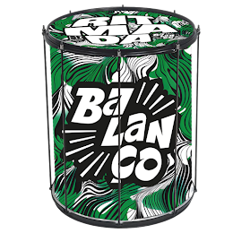
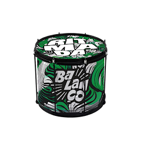
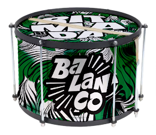
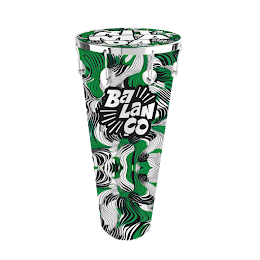
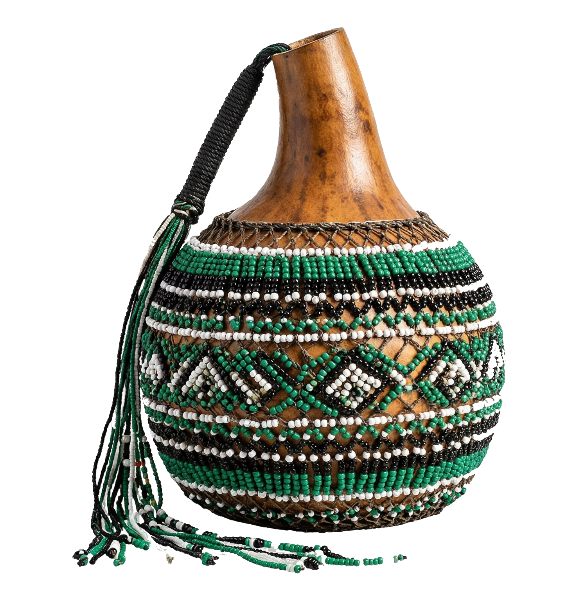
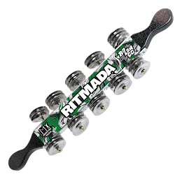
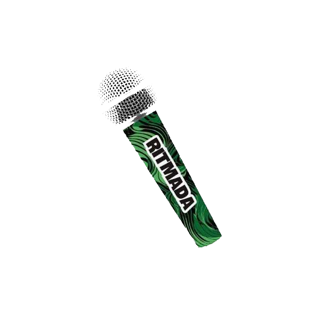
O Que Ensinamos
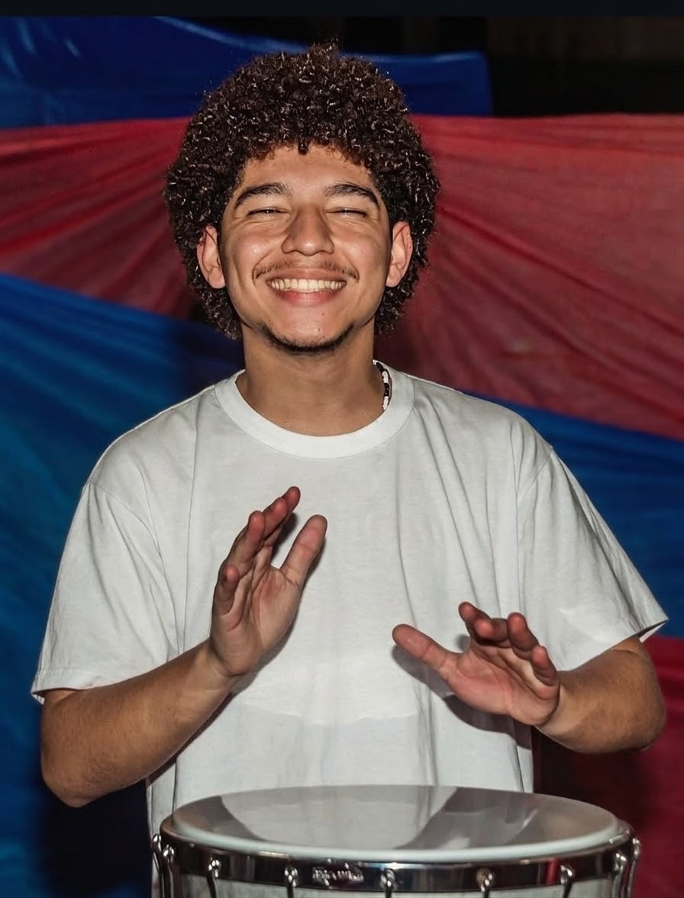
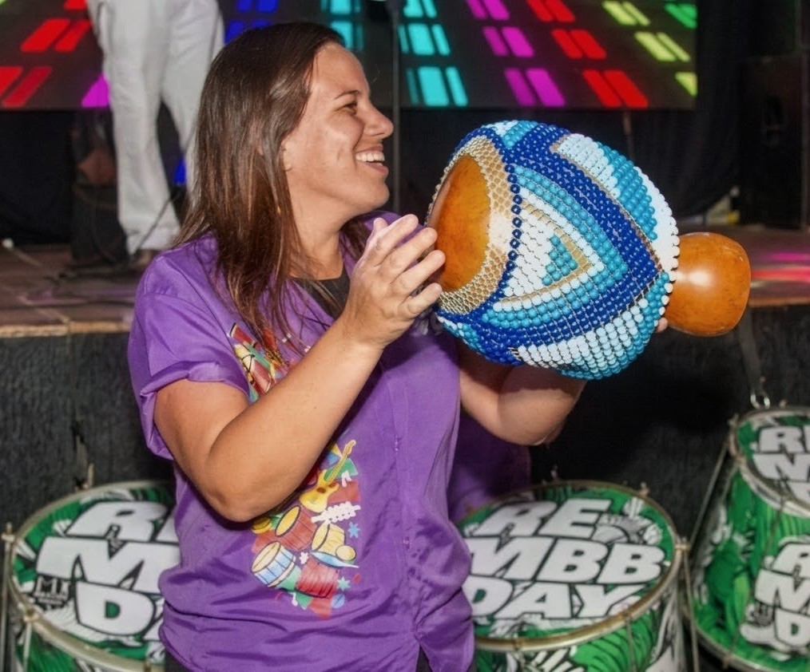
O Que Ensinamos
Este é o segundo ano da turma de canto.
Sobre a professora
Renata Braz é formada em canto lírico pela Escola de Música Villa-Lobos e é cantora oficial do bloco Balanço. Seu trabalho tem um olhar de consciência corporal e terapêutica através do cantar.
O que desenvolvemos
Objetivos da aula
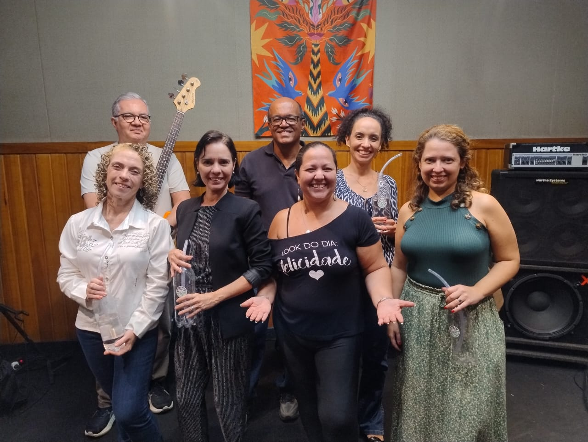
Nossa Equipe
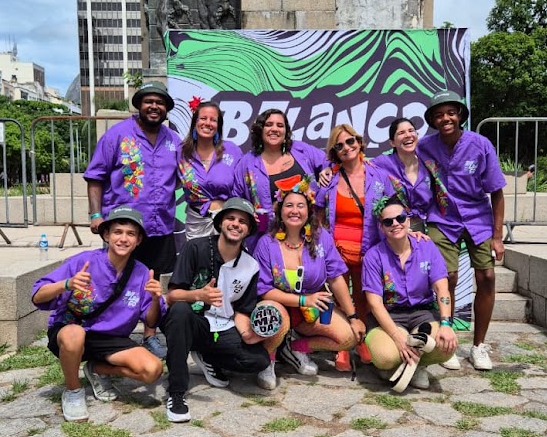
| Naipe / Contexto | Professores / Diretores |
|---|---|
| Mestre | Yago |
| Surdo | Juliana, Izabella e Helena |
| Caixa | Letícia, Valéria, Miguel e Igor |
| Chocalho | Isabella |
| Timbal | Kauã |
| Repique | Amaury e Pedro |
| Xequerê | Juliana |
| Tamborim | Yago |
Rotina de Aulas
Cada naipe tem aula própria toda semana, com professor dedicado ao instrumento.
Todos os instrumentos juntos, praticando o repertório completo do bloco.
Eventos ao longo do ano abertos ao público, no formato de "ensaio geral" para prática do repertório.
Carnaval 2027
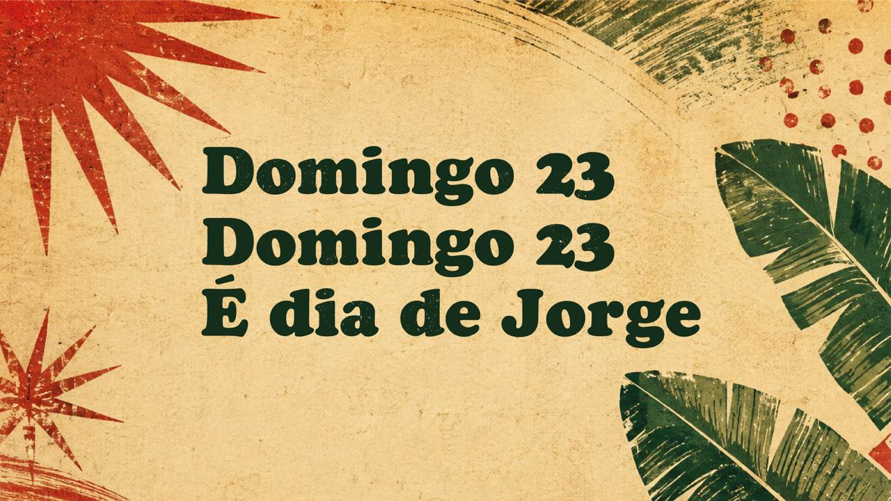
Carnaval 2027
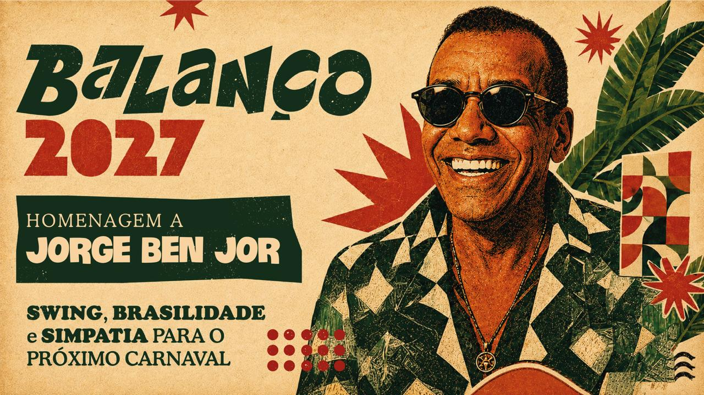
E como vai funcionar o desfile esse ano?
No Dia do Desfile
Abertura do desfile com a formação completa do bloco.
Alunos das turmas desse módulo assumem o repertório.
Alunos mais experientes fecham o desfile.
Diferenciais
Compromisso e Convivência
Respeito e compromisso com as datas de aula e ensaio fazem parte do dia a dia da escola.
Projeto majoritariamente feminino, respeitoso e acolhedor a menores de idade.
Próximos Passos
Gustavo Muniz chega como diretor de harmonia, com o objetivo de padronizar a estrutura de todas as músicas do repertório e contribuir com sua experiência de anos de palco.
Timbal e Xequerê chegando com professores dedicados.
Projetos como o Batuca Jardim, no Jardim Botânico, e Jo&Joe, no Cosme Velho, ampliando onde a escola atua.
Dúvidas? Fala com a direção do seu naipe ou com a coordenação da escola.
Obrigado
Escola Balanço — Formação de Ritmistas para o Carnaval
Bloco de Carnaval · Banda Show